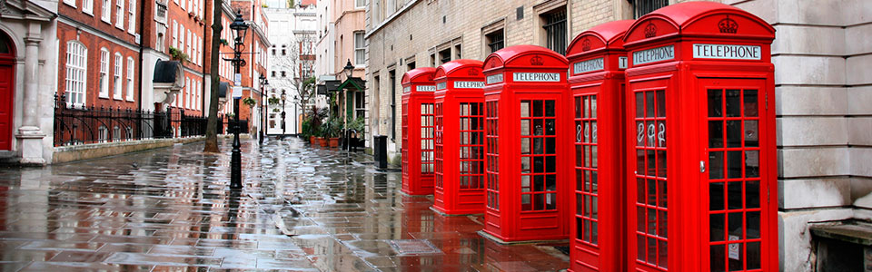

Meetings & Events
All of the following meetings take place in the Bernal Height Landon Hotel in San Francisco, in their new, state-of the-art conference room.
23rd Annual Inventors International Exhibition and Conference:
-
Friday, October 31st through Sunday, November 2nd 2014
The best scientific minds, showing their riveting and forward-thinking inventions, will be in-house for a science and technology-packed weekend. The halls, conference room, and lobby of the Bernal Heights Landon Hotel will be brimming with exhibits, presentations, and demonstrations - providing something for everyone in the family.
KinetEco, Inc. Solar Seminar:
-
Friday, November 7th through Sunday, November 9th 2014
San Francisco's own KinetEco, Inc. has been a trailblazer in solar energy for the past two decades, and has solarized thousands of businesses and residences throughout the world. Join their talented team of engineers and scientists for this not-to-be-missed event that will explore solar as the must-have energy source of the present and future.
Classic Car Socials:
-
Tuesday, November 11th through Wednesday, November 12th 2014
Join other classic car enthusiasts for the monthly classic car social. Bring your car to showcase and share your hobby with others, and enjoy a hearty breakfast buffet. Reservations are required, as parking space is limited for the event.
Hansel & Petal California Native Gardening Seminar:
-
Friday, November 21st through Sunday, November 23rd 2014
With California's current drought situation, never has it been timelier to attend one of Hansel & Petal's informative seminars on native gardening. You'll learn how to select and layout plants for an attractive and drought-resistant landscape. In addition, a tour of some of the best local native gardens will be offered on Saturday morning.